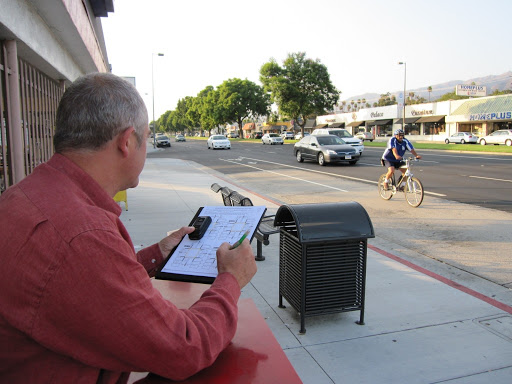
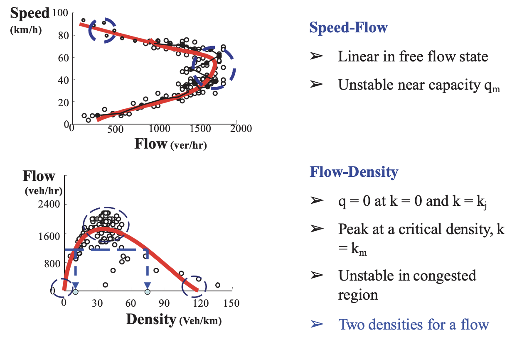

Civil 771: PLANNING AND MANAGING TRANSPORT
Data & Intelligent Transport Systems
Dr Minh Kieu
Senior Lecturer
Department of Civil and Environment Engineering, University of Auckland
These slides:
https://leminhkieu.github.io/p/Civil771-ITS.html
These HTML slides can be accessed by:
https://leminhkieu.github.io/p/Civil771-ITS.html
PDF version can be found on Canvas

Dr Minh Kieu
B401, Room 10.08
minh.kieu@auckland.ac.nz
Traffic congestion
Economical cost:
Auckland's congested roads costed our economy over $1.25 billion in lost productivity (NZTA, 2013)
Social cost:
Emergency access and evacuation
Road users stress and anxiety
Our world-class traffic jams!

Source: NZIER (2017),Benefits from Auckland road decongestion
Intelligent Transport Systems (ITS) apply technology solutions to minimise traffic problems
Intelligent Transport Systems (ITS)
2 lectures, no tutorial
5% of the final exam
Open-ended question

Learning outcomes:
1. Summarise the common ITS achitechtures
2. Understand the benefits of Intelligent Transport Systems (ITS)
3. Understand the benefits of data in transport
4. Discuss Assignment 2
What are Intelligent Transport Systems (ITS) ?
Application of well-established technologies
communication, control, electronics, computer hardware and computer software
in order to increase
the safety
the efficiency
of transportation systems

ITS User Services
Information systems
Traffic safety systems
Payment systems

ITS User Service 1: Advanced Traveller Information Systems (ATIS)
Objective: give information about the transportation system to the driver to make key decisions
Pre-trip information
Route guidance
Post-trip analysis
ITS User Service 2: ITS traffic safety systems, for example:
Anti-lock Braking System (ABS), collision avoidance, driver alert, lane centering etc.
eCall: Automated messaging to emergency services
Mandatory system on all new European cars from 2018
Automated message following a crash
Precice crash location
Only activated after a serious accident
Exercise 1: What do you see in the graph?

ITS User Service 3: Payment systems
Public Transport Smart Card (e.g. AT Hop Card)
Mobile phone payment( e.g. through NFC -- Google Pay, Apple Pay)
Electronic Toll Collection
The most advanced ITS: Autonomous and connected vehicles
Use technology to partially or entirely replace the human driver in navigating a vehicle while avoiding road hazards and responding to traffic conditions.
They rely on:
Sensors: radar, LIDAR, cameras, etc
Complex algorithms, machine learning models
Powerful processors
to detect traffic lights, read road signs, track other vehicles, and look for pedestrians.
More to read: https://www.transport.govt.nz/multi-modal/technology/specific-transport-technologies/road-vehicle/autonomous-vehicles
Autonomous and Connected Vehicles

Integrating data from multiple sources
Are we already 'driving' autonomous vehicles?
New Zealand has adopted the International Standard J3016 as developed by the Society of Automotive Engineers (SAE).

Exercise 2: Group discussion
How will Autonomous vehicles change our cities in the future?
You may discuss about:
Population density & distribution
Traffic congestion
Traffic Safety
Active Transport, Public Transport
or any other major changes you are expecting...

ITS Management Services
Traffic control
Incident management
Travel demand management
New mobility options
ITS Management Service 1: Traffic control
Variable message signs
Ramp metering system
Adaptive & Connected Traffic Signal systems (e.g. SCATS)
Traffic control using Autonomous Vehicles
https://www.nzta.govt.nz/roads-and-rail/management-and-maintenance/traffic-management/
Variable message signs


Variable message signs
Inform road users about specific temporary events and real-time traffic conditions
Benefits: reducing stress, anxiety and increasing traffic safety
Main challenge: difficult to measure the benefits, implementation cost
Ramp metering

How modern traffic signals work?
With loop detectors as sensors
Traffic Signal: Adaptive Traffic Signal Control
Phase settings (e.g. green time) are adaptively defined
Intersections are often coordinated
Most popular system is the Sydney Coordinated Adaptive Traffic System (SCATS)
Traffic Signal: Why can't we be more efficient?
Traffic signal is not fully adaptive to the demand
Vehicles take time to speed up, slow down (phantom traffic jam)
Traffic control with AV
ITS Management Service 2: Incident management
Traffic Management Centres
Signal priority system
Decision Support Systems
ITS Management Service 3: Travel Demand Management
Applications of technologies to reduce or redistribute travel demand
Changing mode choice
Changing departure time and location choice
Travel Demand Management: Changing mode choice
Integrating with User systems such as travellers' information
Bus priority systems
Assisted active transport modes (e.g. electric bike)
Travel Demand Management: Changing departure time and location choice
Congestion charging or cordon congestion toll
Variations: Clean Air Charging Zone
ITS Management Service 4: New mobility options
Sharing modes: Bike sharing, car sharing, carpooling
On-demand transport
Mobility-as-a-service
Exercise 3: Group discussion:
What new ITS Management systems do you think should be implemented in Auckland?
What specific transport problem that it would solve?
Learning outcomes:
1. Summarise the common ITS achitechtures
2. Understand the benefits of Intelligent Transport Systems (ITS)
3. Understand the benefits of data in transport
4. Discuss Assignment 2
The challenges
ITS systems are complex: require strong leadership to address potentially conflicting technologies, standards and perspectives
Media stories and marketing have generated a lot of interest in and enthusiasm for vehicle-related intelligent transport systems
Learning outcomes:
1. Summarise the common ITS achitechtures
2. Understand the benefits of Intelligent Transport Systems (ITS)
3. Understand the benefits of data in transport
4. Discuss Assignment 2
Why do we need to collect data?
Managing the physical systems (e.g. maintain, repair, operate)
Investigating trends over time (e.g. forecast future mobility needs)
Accessing potential impacts (Before & After studies, or Cost-Benefits Analysis)
What are the key data in transport?We'll talk about
What is speed, flow, density and travel time?
How to collect them?
What is 'speed': Speed is a vehicle's rate of motion
Spot speed is the instantaneous speed of a vehicle at any specified point.
Is it the speed you see on your speedometer?
How to measure spot speed in practice

How to record $t_0$? When we observe a magnetic signal from the loop detector
How to measure spot speed in practice

Which data do you think is being collected?
What is 'traffic flow'?

The total number of vehicles passing a given point in a given time. Traffic flow is expressed as vehicles per hour (veh/hr)
Why do you need traffic flow?
Measure of traffic effectiveness: e.g. how many cars can get out of an intersection?
Traffic capacity: e.g. how many lanes we need on the motorway?
What is 'traffic flow': The total number of vehicles passing a given point in a given time. Traffic flow is expressed as vehicles per hour (veh/hr)

Traffic flows monitoring: With human suveryors
Costly and inefficient.
But quite flexible
Traffic flows monitoring: With road tubes
Cheap and flexible
But what are the limitations?
Traffic flows monitoring: With loop detectors
Automatic, and can provide data in real-time once the infrastructure is inplace
Very high cost for maintenance

Traffic flows monitoring: With mobile phone data

Huge volume of detailed data but has privacy concerns or coarse resolution
Traffic flows monitoring: Using computer vision
Efficient and economical
But still quite early so might not be realiable (yet)
What is 'density'?

The average number of vehicles that occupy one mile or one kilometer of road space (veh/km)
Why do we need to measure 'density'?
Direct measure of traffic congestion: denser road is more congested
Traffic control purpose: redirect traffic to roads where we still have space
How do you think density can be measured?
Number of people waiting vs travel delay: similarities and differences


The number of people on a roadway does affect the travel delay!
Density, speed and flow are well linked
Relationship between Speed, Flow, and Density
Traffic flow theory involves the development of mathematical relationships among the three primary elements of a traffic stream namely flow, density and speed.
Read more:
https://lost-contact.mit.edu/afs/eos.ncsu.edu/info/ce400_info/www2/flow1.html
These relationships help traffic engineers in planning, design and operation to determine:
reasons for traffic congestion
bottlenecks in the transport network
delay experienced by travellers.
changes in performance of road networks due to road improvement measures.
Vehicle density affects speed!
When density is (near) zero, speed will be ...

When density is maximum, speed will be ...
1st fundamental diagrams of traffic flow: Speed-density relationship

Greenshields (1935) carried out one of the earliest recorded works hypothesized a linear relationship between speed and density
2nd fundamental diagram of traffic flow: Flow & Density relationship:
This one is more challenging!
When density is zero (Free-flow condition), speed is high, flow will be ...
When density is low, speed is high, flow will be ...

2nd fundamental diagram of traffic flow: Flow & Density relationship:
When density is high, speed is still high, flow will be ...

When density is maximum (Jam density), speed is near zero, flow will be ...
Exercise 4: Could you map these traffic conditions on the right to the diagram on the left?
2nd fundamental diagrams of traffic flow: Flow-density relationship

Some characteristics of an ideal flow-density relationship
When the density is zero, flow will also be zero,since there is no vehicles on the road.
When the number of vehicles gradually increases the density as well as flow increases.
Critical density: some density between zero density and jam density, when the flow is maximum.
Jam density: When more and more vehicles are added, it reaches a situation where vehicles can't move.
3rd fundamental diagram of traffic flow: Speed & Flow relationship:
More interesting facts about traffic
3rd fundamental diagrams of traffic flow: Speed-flow relationship

The linear speed-density model can be rearranged into the following speed-flow model:
\[\begin{aligned} k = k_j \bigg( 1 - \frac{v}{v_f} \bigg) \\ \end{aligned} \] \[\begin{aligned} q = k v = v k_j \bigg( 1 - \frac{v}{v_f} \bigg) = k_j \bigg( v - \frac{v^2}{v_f} \bigg) \\ \end{aligned} \]Fundamental diagrams of traffic flow: Empirical values
Fundamental diagrams of traffic flow: All-in-one digram

Issues in traditional data collection methods
Accuracy
Expenses
Purpose of the data collection
Big Data in transportation: Summary
Challenges
Skewness
Prolific users distort patterns
Privacy concerns
Bias
Missing data
E.g. Choose a number between 1, 2, 3 and 4
Complicated!!
Messy, and "too big for Excel"
Benefits
Volume
Potential for large scale analysis
Velocity
Streaming / regularly updated
Potential for dynamic models
Exercise 5: Group discussion:
Analyse traffic data in the graphs below
Data from Auckland in 2020

Learning outcomes:
1. Summarise the common ITS achitechtures
2. Understand the benefits of Intelligent Transport Systems (ITS)
3. Understand the benefits of data in transport
Assignment 2: Application of Intelligent Transport System for a chosen area of New Zealand - current issues and solutions
You may identify a specific traffic issue in New Zealand in general, or Auckland in particular, where you think the transportation system can be improved, e.g. congestion, traffic safety problems, noise or emission problems.
Propose a set of ITS solutions to solve these issues, e.g. you may introduce a new technology, system or traffic policy that would be beneficial for New Zealand if they are implemented.
Submit the report on Canvas on 18th Sep at 2 pm. (30%)
Presentation in class at the last block (10%)